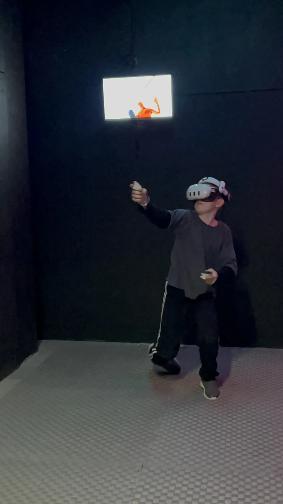

Вопрос «с какого возраста можно VR» нельзя решать только одной цифрой: производители указывают возрастные рекомендации для конкретных устройств, а родители дополнительно оценивают рост, самочувствие и реакцию ребёнка. В «БЭНГЕРЕ» праздничный формат рассчитан на школьников от 8 лет, а игры подбираются индивидуально.

Как выглядит безопасное начало
- Оператор уточняет, играл ли ребёнок раньше.
- Освобождает игровую зону и показывает границы.
- Подбирает простой контент без резкого виртуального перемещения.
- Регулирует ремни, объясняет кнопки и страховочный ремешок контроллера.
- Начинает с короткого раунда и наблюдает за движениями.
Почему короткие раунды лучше
Новичок ещё не знает, как организм реагирует на виртуальное движение. Короткая игра позволяет остановиться до усталости и быстро сменить участника. На празднике это ещё и честнее: больше гостей успевают попробовать VR.
Не существует обязательной продолжительности, одинаковой для всех. Ориентируйтесь на инструкцию устройства, возрастную маркировку игры и самочувствие ребёнка. При дискомфорте игру прекращают сразу.
Какие сигналы нельзя игнорировать
- головокружение или тошнота;
- резкая усталость глаз;
- головная боль;
- потеря ориентации после снятия шлема;
- страх, паника или желание срочно снять устройство.
Что делает оператор
Оператор не просто включает приложение. Он выбирает игру, контролирует свободное пространство, помогает надеть шлем, видит изображение игрока на экране и предупреждает, если ребёнок приближается к границе зоны.
Гигиена оборудования
Контактные поверхности очищают между игроками, а регулировку шлема выполняют заново. Детям не стоит обмениваться шлемами самостоятельно, бросать контроллеры или выходить в общий проход, не сняв устройство.
Кому нужна дополнительная осторожность
Если у ребёнка есть заболевания, приступы, нарушения равновесия, выраженная чувствительность к световым эффектам или недавно было плохое самочувствие, решение лучше заранее обсудить с родителями и врачом. VR не должен заменять медицинскую рекомендацию.
VR на празднике: чем заняты остальные
Четыре шлема не означают очередь из гостей. В правильном сценарии параллельно работают другие зоны: Xbox с Just Dance, Nintendo, караоке или задания ведущего. Дети переходят между ними небольшими группами. Подробнее схема описана на странице VR-праздника.
Перед большим событием лучше прийти на тест: ребёнок поймёт управление и выберет комфортную игру, а родители увидят работу оператора.